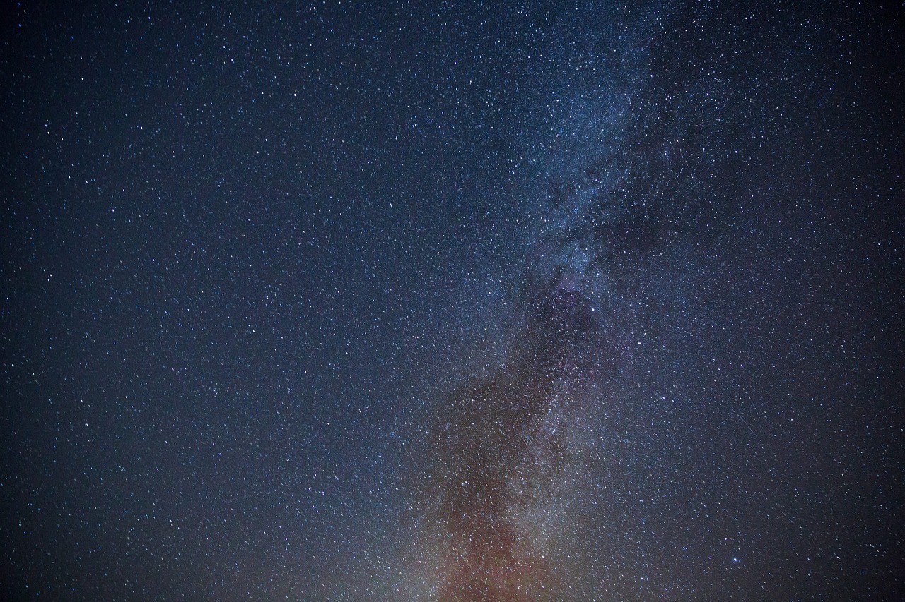

Découvrez les merveilles de l'univers
8 Avril, 2024
L'univers est un endroit fascinant, rempli de merveilles et de mystères. Des étoiles brillantes aux planètes lointaines, il y a tant de choses à explorer et à découvrir. Les astronomes et les astrophysiciens passent leur vie à étudier l'univers et à essayer de comprendre ses secrets les plus profonds. Dans cet article, nous allons explorer certaines des merveilles les plus étonnantes de l'univers et en apprendre davantage sur ce qui rend notre cosmos si spécial.
Les merveilles de l'univers les plus surprenantes
- Les trous noirs: Les trous noirs sont l'une des merveilles les plus mystérieuses de l'univers. Ils sont des régions de l'espace où la gravité est si intense que rien, pas même la lumière, ne peut s'échapper. Les trous noirs se forment lorsque des étoiles massives s'effondrent sur elles-mêmes en fin de vie.
- Les supernovas: Les supernovas sont des explosions stellaires massives qui se produisent à la fin de la vie d'une étoile. Pendant une supernova, une étoile libère une quantité incroyable d'énergie et de matière dans l'espace, créant de nouveaux éléments et propageant la vie à travers l'univers.
- Les nébuleuses: Les nébuleuses sont de vastes nuages de gaz et de poussière dans l'espace, où naissent de nouvelles étoiles. Ces régions de formation d'étoiles sont parmi les endroits les plus dynamiques et les plus spectaculaires de l'univers.